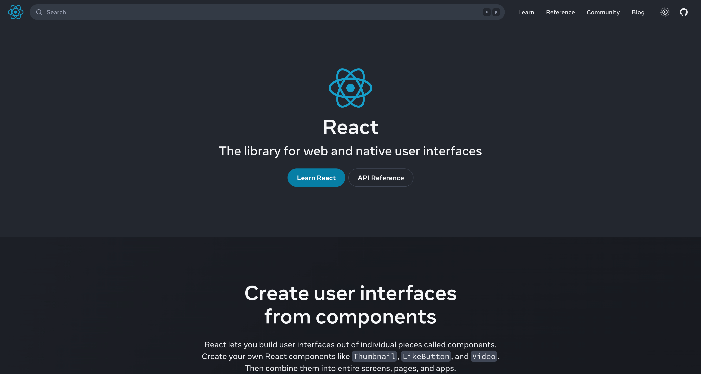

Hick's Law
npm
npmjs.com
Hick's law is a psychological principle which states that the more options are available to a person, the longer it will take for him or her to make a decision about which option is best. Hick's Law is often applied to emphasize the importance of simplicity and reduced complexity in the design of menus, navigation, and other interactive elements. According to this law, the more options you have, the longer it will take you to decide.
The npm website effectively applies Hick's Law by simplifying user options to the basics and emphasizing the most important choice. The navigation bar is minimized and placed on the side, while the central focus is on the search area. Given that most users are likely searching for a package, the search area becomes the focal point. It features a straightforward design with just a search box and a button. Since the user can only interact with the search box, their attention is solely on this element. The search button is simple and bold so it stands out, making it easy for users to quickly locate what they need.
Rule of Thirds
esri
esri.com
The rule of thirds serves as a fundamental guideline in web design, aiming to establish visual harmony and balance within the elements featured on a landing page. The core principle involves positioning key elements within a third of the page, as this arrangement is deemed more visually appealing than a centralized or zoomed-in placement. Imagine a virtual tic-tac-toe board superimposed on your viewport, comprising two equally spaced vertical and horizontal lines. These lines effectively divide the viewport into nine rectangles, with the points where the lines intersect referred to as "rule of thirds" points. In adherence to this rule, it is recommended to position your primary subject on one of these points or along the lines for optimal visual impact.
Looking at the esri landing page provides a tangible example of the effective application of the rule of thirds. By strategically utilizing a grid, they have identified areas for negative space and precisely positioned attention-grabbing text and images. The alignment along both horizontal and vertical lines guides the reader's focus toward the crucial elements on the page, creating a visually engaging experience that highlights key content.
White Space and Clean Design
React
react.dev
Space is an important and often underrated design element that significantly influences the user experience. Whitespace or negative space is the area between the elements on a webpage. It can be used to emphasize an image, a graphic, or some text, all you need to do is leave blank space around the particular item you want users to focus on. This space helps the page to feel clean and prevents the user from getting distracted. It balances the information and style making the page aesthetically pleasing and purposeful.
The React website has skillfully incorporated whitespace design, by centering its brand for enhance user awareness. This intentional use of negative space not only draws the user's attention to the central elements but also functions as a subtle guide. The strategic placement of call-to-action buttons within this whitespace serves a dual purpose, not only capturing the user's focus but also providing a clear path for navigation. This use of whitespace and clean design in the design of the React website enhances the user experience, emphasizing both brand identity and intuitive interaction.